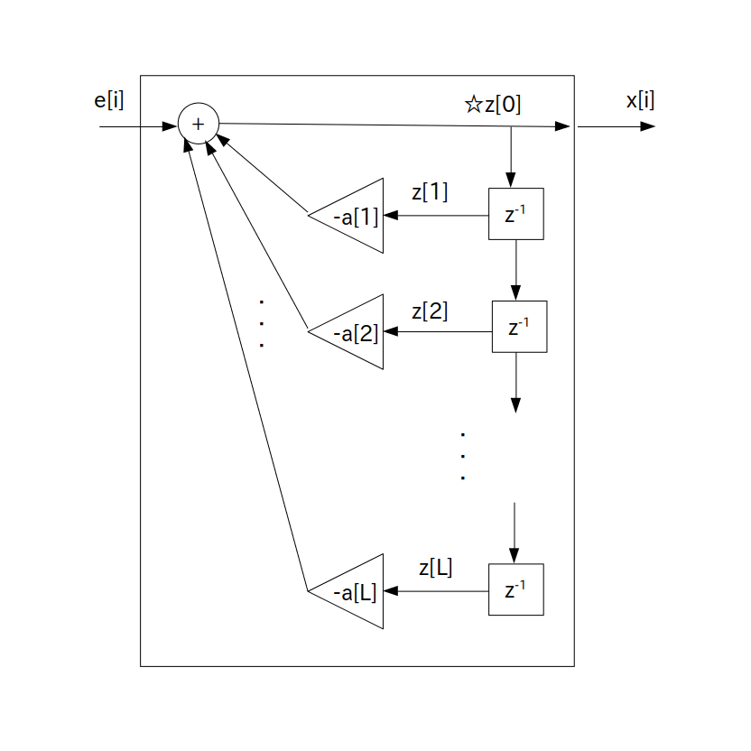

あるディジタル信号列 $x[i]$ が次の式に従って確率的に生成されているとき、この $x[i]$ は L 次 自己回帰モデル( Auto-Regressive model : AR モデル )に従って生成されていると言います。
この L 次自己回帰モデルは記号 AR(L) で表されます。
次数 $\textrm{L}$ を正の整数とした時
\begin{align*} x[i] & = -\sum_{n=1}^{\textrm{L}} \{ a[n] \cdot x[i-n] \} \} + e[i] \\ & = -a[1] \cdot x[i-1] -a[2] \cdot x[i-2] - \cdots -a[\textrm{L}] \cdot x[i-\textrm{L}] + e[i] \\ \end{align*}$a[n]$ ・・・ LPC 係数 (Linear Prediction Coefficient: 線形予測係数 )
$e[i]$ ・・・正規乱数などの任意のホワイトノイズ
$x[i]$ は確率変数になるので、信号列を生成する毎に異なる信号列が出てくることに注意して下さい。
また次数 L と LPC 係数 $a[n]$ の値は本来は未知数なのですが、とりあえず今の所は既知であるとします。
なお $\sum$ の前にマイナスが付いている理由は歴史的な背景によるもの(計算を見やすくするため？)なので特に気にしなくても結構です。
さて AR(L) は次のブロック図で表されます。

要するにホワイトノイズ $e[i]$ を入力すると確率変数 $x[i]$ が出力される標準形 L 次 IIR フィルタとなります。
ただし後段フィードフォワード部の IIRフィルタ係数は b[0] = 1 で残りは b[n] = 0 なので、プログラム表現は以下の通りに簡略化されます。
x[i] = 任意のホワイトノイズ for( int n = 1; n <= L; ++n ) x[i] += -a[n] * x[i-n]; // a[n]の符号注意